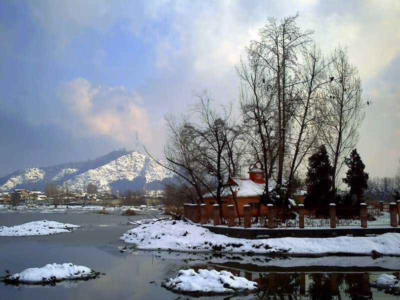
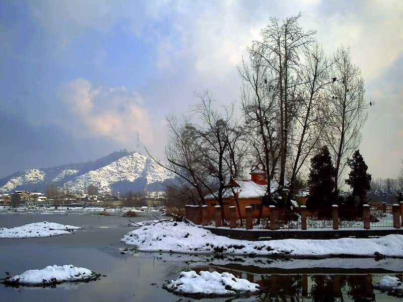
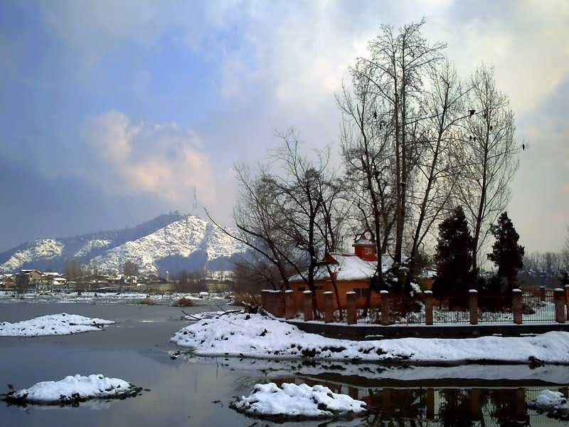
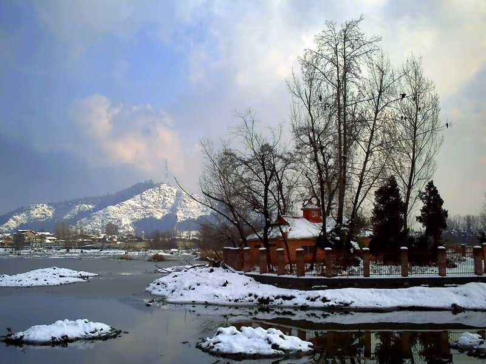

Situated at an altitude of 2730 m above sea level, Gulmarg is a popular skiing destination located in Pir Panjal Range of Union territory of Jammu and Kashmir. Surrounded by snow-covered lofty Himalayas, meadows of flowers, deep ravines, evergreen forested valleys, Gulmarg also has the world's second-highest Gondola ride.
Among one of the top honeymoon locations, Gulmarg boasts of being a beautiful town without the crowd like Manali and Shimla. Gulmarg has also been developed as an adventure hub as Indian Institute of Skiing and Mountaineering is located here. A lot of courses on trekking, mountaineering, skiing, etc. are offered by IISM at great prices here. However, if you are planning to do a course, it is advisable to book it well in advance. There are a lot of other private tour operators in Gulmarg as well which provide similar courses and facilities for skiing, snowboarding and trekking. Known for its scenic beauty, Gulmarg has also been a popular destination for shooting of various Bollywood films.
Winters see Gulmarg transforming into a winter wonderland, and as the summer arrives the beauty of Gulmarg does not fade away, it only becomes more beautiful. In the autumn season, Gulmarg is filled with the beauty of flowers that blossoms in the brightest of their colours, leaving Gulmarg in the sheet of vibrant colours peeking out from every nook and corner of the valley.
Kashmir, on the banks of river Jhelum. As picturesque as the most stunning painting to ever be painted, Srinagar is known for the stationary houseboats and colourful Shikararas on Dal Lake.
The gondola-type rowboats, Shikaras are used by the tourists to see attractions like the Floating Vegetable Market, and the Mir Bahris – a lively community of people who live on the lake itself. Known as the summer capital of Jammu & Kashmir, Srinagar is home to some of the most exquisite Mughal-age gardens in India, with the top draws being Nishat Bagh, Shalimar Bagh and Chashm-E-Shahi Garden. Kashmiri cuisine is famous all over the globe, so when in Srinagar, trying out the local dishes, which are rich in unique fragrant spices, is a must.
Heavy snowfall affects the connectivity of Srinagar during the winter months of December to February. Communal tensions also lead to frequent curfews in parts of the city. Make sure to check the situation before visiting.